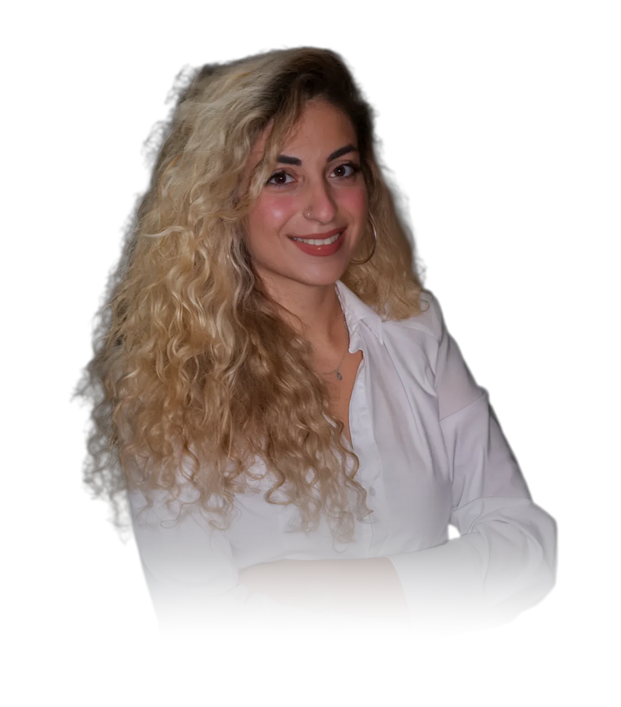

עיצוב וקריאייטיב
מיתוג, קמפיינים, מודעות, דפוס ותכנים לסושיאל. שלוש שנים במשרד פרסום, בצוות קריאייטיב ומול מנהלי לקוחות, בלוחות זמנים צפופים.
אני מעצבת גרפית
3 שנים במשרד פרסום • אתרים ודפי נחיתה עם בינה מלאכותית • מיתוג, מודעות ודפוס


שלוש שנות ניסיון במשרד פרסום ועבודה עצמאית מול סוכנויות ולקוחות קצה.
מלווה פרויקטים מהרעיון ועד העלייה לאוויר: שפה חזותית, חומרים גרפיים לדיגיטל ולסושיאל, ואתרים/ דפי נחיתה שנבנים כדי להביא פניות. עובדת עם בינה מלאכותית בכל שלב, מהעיצוב ועד הקוד, ולכן מספקת אתרים ברמה גבוהה יותר בפחות זמן.
מיתוג, קמפיינים, מודעות, דפוס ותכנים לסושיאל. שלוש שנים במשרד פרסום, בצוות קריאייטיב ומול מנהלי לקוחות, בלוחות זמנים צפופים.
בונה אתרים ודפי נחיתה בווייב קודינג עם קלוד, עם מיקרו אנימציות ואנימציות גלילה. מהעיצוב בפיגמה ועד אתר באוויר, בלי לחכות למפתח. וגם בוורדפרס ובאלמנטור.
כותבת את התוכן ובונה כל דף כמשפך שיווקי, מהכותרת הראשונה ועד הפנייה. כל החלטה עיצובית משרתת מטרה עסקית.
מחפשים מעצבת שגם בונה אתרים? אשמח לשמוע על התפקיד.